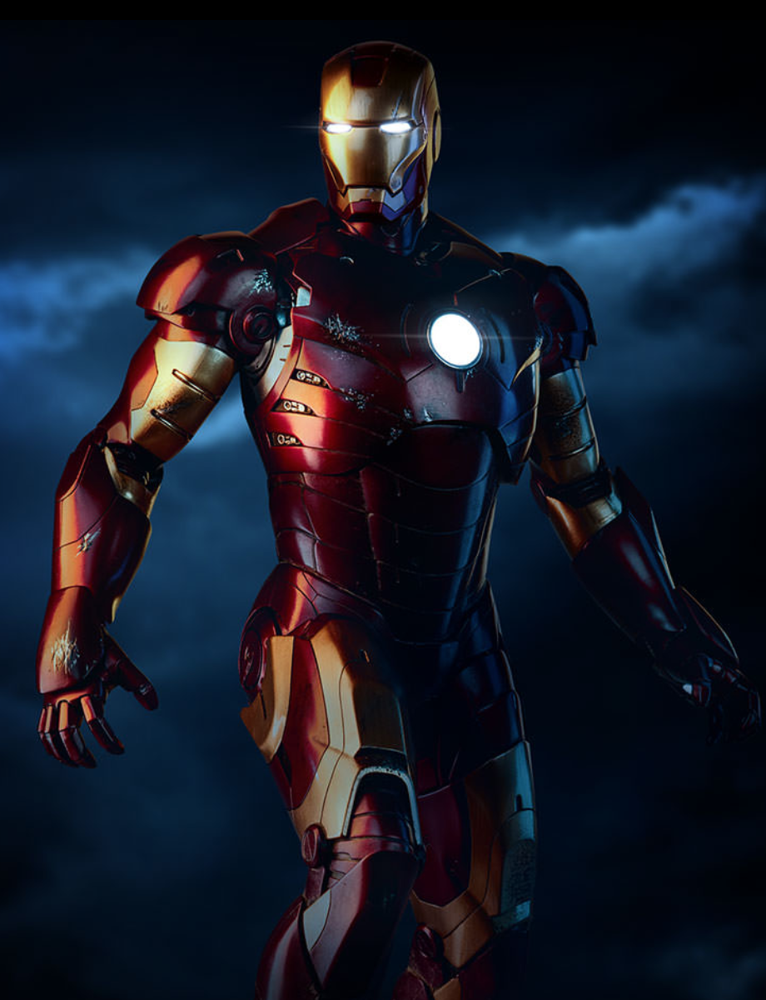
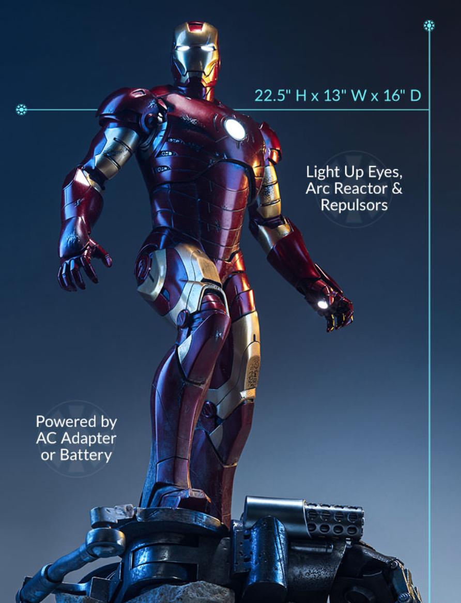
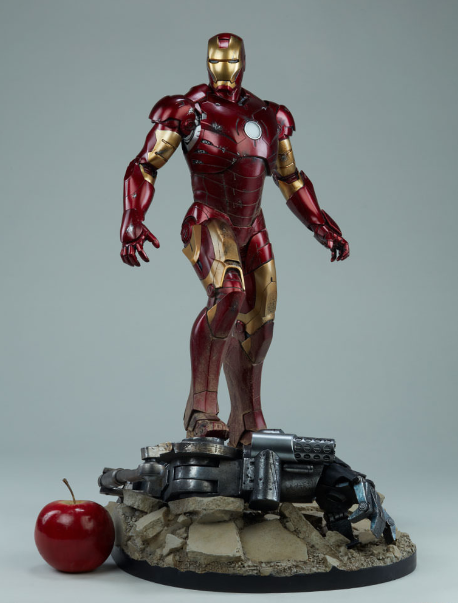

The Iron Man Mark III Maquette stands 22.5” tall, with an intricate design based on Tony Stark’s third suit of armor from the first Iron Man film. The Mark III was the first suit to feature Iron Man’s iconic red and gold armor plating, and the suit is detailed with weathering effects from battle. Destroyed remnants of the malicious Iron Monger litter the rubble base where Iron Man stands triumphant after the skirmish. The Mark III suit has light-up features in the arc reactor, eyes, and hand repulsors. The arc reactor in Iron Monger’s chest also has a flickering effect. The Maquette will have both an AC adapter and battery options as power sources. Upgrade your arsenal and add the Iron Man Mark III Maquette to your Marvel collection today!
ADD TO YOUR SHOPPING CART!   